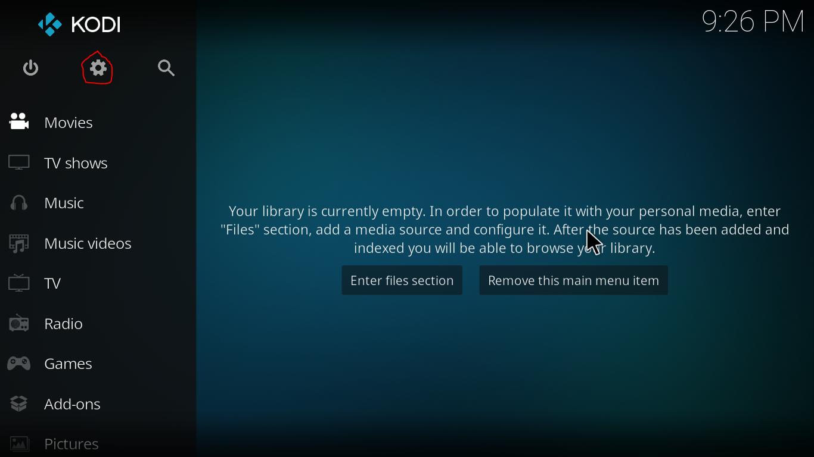
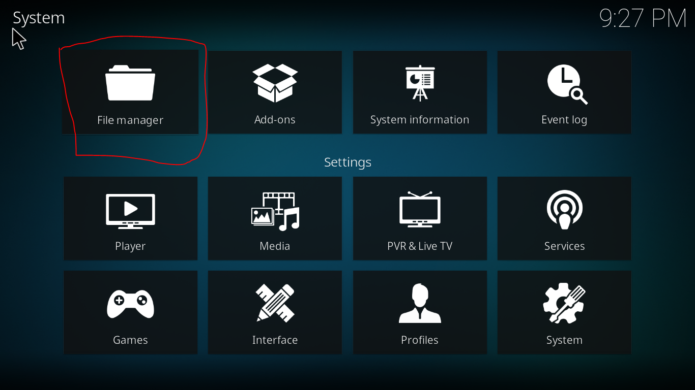
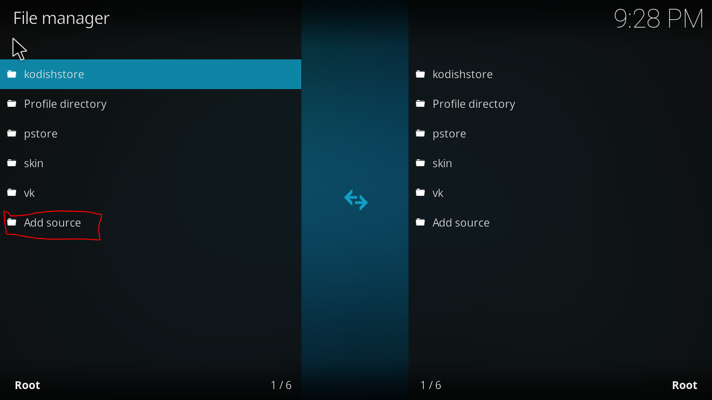
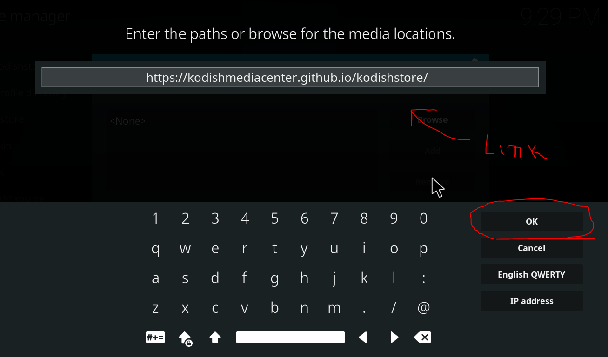
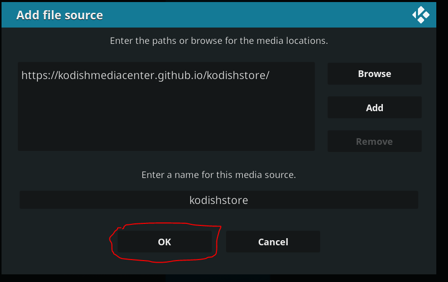
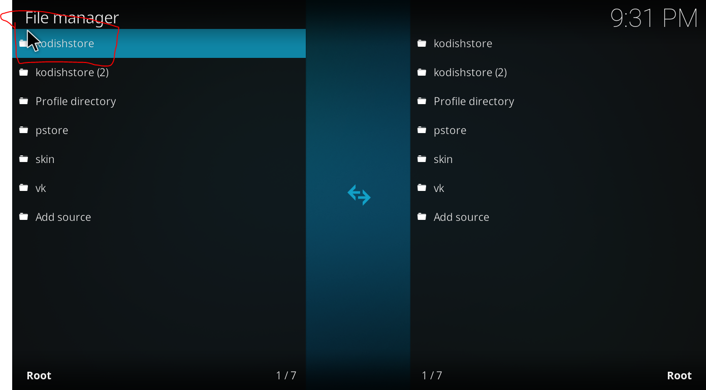

| ADD-ONS: | ||||
|---|---|---|---|---|
| Kodish.repo.store.zip | V: | z.2.0 | ||
1. Clica na Engrenagem 
2. Clique em File Manager (Gestor de Arquivos) 
3. Nessa Imagem clique em Add source 
4. Nessa Imagem Irar adicionar o Link e clicar OK 
5. Verifique se os dados tão correto e clique em OK 
6. Verifique se a fonte aparece na lista 